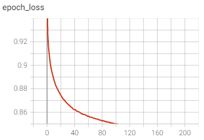

grub.ai
Rithik Gavvala, Rahul Rajan, Saloni Shah, and Aakash GupteFall 2020 CS 4641 Class Project
Georgia Tech
Project
Using content from active platforms, to provide businesses & the general public with more accurate analytics on a restaurant’s rating.Summary figure
Background
For our project, we decided to look at the current restaurant rating system- we found out that a restaurant’s rating has a significant impact on its potential revenue. More specifically, a 1-star increase in a restaurant’s Yelp rating can lead to a more than 9% increase in revenue. Due to this impact, we wanted to figure out ways to get a more accurate “5-star review” of a restaurant based on the latest data. Fortunately, social media has provided us a way to gain insight into how people feel about restaurants and menu-items in real-time. Introducing grub.ai, a machine learning system that predicts a restaurant’s review based on real-time social-media sources.Delving further into why we decided to create this project, the biggest problem we had with current review systems was that the opinions were outdated. All it took was a quick scan through a collection of Yelp reviews to see that most of the reviews that contributed to the rating were pretty old or inaccurate. We wanted to think of some way to create a system to have real time data presented through the common star-rating format. Although traditional reviews may give you a baseline for how a restaurant experience will be, it wasn’t enough for us. We wanted a system to determine what people’s thoughts are about a restaurant at any given moment. That is what led us to thinking through the lens of Twitter and other popular social media platforms. Specifically on twitter, we could see hundreds of tweets about restaurants, and what people’s opinions are on that. So through the process of training a model with the Yelp dataset that we are given, we proposed to utilize this model in order to produce explicit star-rating results from restaurant tweets, postings, etc. We applied different unsupervised and supervised methods, and analyzed which would prove the most useful in the development of our final product.
Methods
Data preparation/pre-processing
Before beginning, the data needed to be processed into the correct format for manipulation. The first stage in data preparation was to download the Yelp review dataset. This dataset provided a lot of information that was extraneous to our use case. Our next stage was to extract the features that we needed from the JSON dataset. We deemed that the most important features from the dataset that we needed were the “review_id”, “stars”, and “text” from each review. We took this data and placed it into a Pandas dataframe. After we had the Pandas dataframe, we needed to process each review text to remove punctuation and stem each word so that we have clean review text for vectorizing.Data Exploration
Initially, we chose to use Tf-idf Vectorization in order to gain a better understanding of what our dataset is. Unsupervised learning gives us the ability to not need pre-existing labels in order to look for patterns in a dataset, so it gives us a lot more information. We can then use this information in our supervised techniques, which do require labeled data, in order to ultimately be successful.Tf-idf Vectorizer
The purpose behind using Tf-idf as a method for vectorizing text is that it is a statistical approach based on term weighting. We have a large number of reviews and we wanted to determine the important words that carry weight based on star-rating. This method allows us to ignore the words that carry less importance (stopwords).This algorithm is efficient in matching words in a query to documents that are relevant to the query. Tf-idf has a historical precedent of returning documents that are highly relevant to a particular query. You can also compute the similarity between two arguments with it. The disadvantage of this approach is that since it is based on the bag-of-words model, it may not capture the position in text, semantics, or co-occurrences. It is only useful as a lexical level feature.
K-Means Clustering
Utilizing the Tf-idf vectorization, we ran the K-means clustering algorithm multiple times in order to extract the data on JSON objects of reviews from the Yelp dataset. For the unsupervised learning aspect of our project we decided to move forward only with Tf-idf vectorization as it allowed for easier manipulation of the dataset. By running K-means on different altered datasets, our goal is to see how to best cluster the data and from there gain a deeper understanding of the dataset. We ran the K-means clustering algorithm on data with several different feature vector sizes to optimize the groupings of related reviews.After running the vectorization methods on the reviews of the Yelp dataset, we needed to find the optimal number of clusters in which each dataset may be clustered. Utilizing the elbow method, we were able to plot the distortion as a function of the number of clusters in range of K. For K-means clustering using Tf-idf vectorization, we were able to determine that 3 is the optimal number of clusters.

After analyzing the average star rating of each of the different clusters, we observed that all the average star ratings were above 3 stars. We decided to take a further look into the star frequency from all reviews of the dataset. As shown in the bar graph below, we were able to observe that the majority of the review star ratings are in the range from 3.5 to 5.0. This better explains the distribution of the average star ratings of the clusters. We were able to observe that there was a higher frequency for 1, 4 and 5 star ratings showing that the data was extremely unbalanced. Thus, it was crucial that we were aware of the need to develop a balanced dataset for future training of the model. Either through fabrication or random sampling of the same size from each category, we would then be able to produce more valid and neutral results.

Sentiment Analysis
The next approach we looked at was sentiment analysis, so we can understand the difference in sentiments across different star reviews. We first processed all of the data by the review id, stars, and text. Then, for each star rating we filtered our data frame to calculate the average sentiment for reviews per star rating. We were then able to visualize the average sentiment per each clustered star rating. By using the TextBlob library, which uses a sentiment analysis function that determines the attitude of the writer, the function returns a number from -1 to 1. The function essentially ignores one letter words and words it doesn’t know anything about, to find a sentiment value from -1 to 1 in how much sentiment it shows. This will return an average of each of the words in the cluster and is what can be seen in the graph. As expected we can see that the sentiment value increases as the star rating increases, signaling that the sentiment shown in the higher star clusters is greater than the sentiment shown in the lower star clusters.Looking Into Other Vectorization Methods
After data exploration, we were able to deduce that Tf-idf vectorization would most likely not be the best technique to utilize in our supervised learning methods. As we found in our results from K-means clustering, this vectorization technique did not produce distinct clustering as well as lacks information regarding semantics and context. Thus, we decided to take a deeper look into other vectorizations before narrowing down to the optimal choice.Word2Vec Vectorizer
We want to try using a neural network based vectorizer. With Word2Vec we have an option to create neural word embeddings with either skip-grams or continuous bag of words. We were drawn to this approach because it forms vectors based on context which could be key to determining sentiment within the thousands of reviews that we have.The approach is very intuitive, transforming the unlabeled raw corpus into labeled data, and learning the representation of words in a classification task. The process requires little memory, and needs little preprocessing as the data can be fed in a simple way. The simple mapping between the target word to its context word implicitly embeds the sub-linear relationship into the vector space of words. Some disadvantages of this approach is that the sub-linear relationships are not explicitly defined, which means there’s little theoretical support behind the characteristic. Also the model may be difficult to train if the softmax function is used since the size of the vocabulary would be too large. Through approximation algorithms are used to address this issue, other problems can still happen like word vectors not being distributed uniformly, and the vector space not being sufficiently utilized.
GloVe Vectorizer
Our group is drawn to GloVe because it trains on co-occurrence counts of words and uses statistics to produce a meaningful word vector space. With this method, we can capture the meaning of one word embedding with the structure of the entire corpus.The advantages of this algorithm is that it’s goal is very straightforward. It is just trying to enforce the word vectors to capture sub-linear relationships in the vector space. This approach also adds some more practical meaning into word vectors by considering the relationship between word pairs rather than between words. This algorithm also gives lower weight to highly frequent word pairs to ensure that meaningless stop words don’t dominate the training period. However, a disadvantage to this algorithm is that the model is trained on the co-occurrence matrix words, which takes a lot of memory for storage. If you change any of the parameters related to the matrix, you would have to reconstruct the matrix again in a very time consuming process.
BERT Vectorizer
After doing more thorough research, our group came across BERT as a vectorization method that could be used for getting the different word embeddings for our model. BERT is a neural network based NLP pre-training called Bidirectional Encoder Representation from Transformers (BERT). The basic idea of a transformer model is that it is designed to handle sequential data such as natural language. BERT’s main purpose is that it can be used to generate contextualized word embeddings.Getting the contextualized word embeddings in the vector space of a text review is one of BERT’s biggest advantages. However, the disadvantage of using BERT is that it tends to be very compute-intensive. For example, some of the word vectors that are found in other vectorizers are pre-calculated whereas with BERT; these word vectors end up being calculated every time because they are contextualized.
Decision
After evaluating different vectorization techniques and model architectures, we arrived at GLoVE and BERT for vectorization, connected to a fully connected feed-forward network with one relu hidden layer and a softmax output layer. We also decided to focus on 2 key metrics: top-k-accuracy and f1-score. We decided to use both top-1 and top-2 accuracy because given the problem, we thought it was appropriate to also include predictions that were only 1 star off (model predicted 2 stars instead of 1 star).Neural Networks
Our process for developing our supervised learning approach is that we utilized a basic Keras model to train our own model on a subset of 500,000 vectorized reviews itself. Essentially what we did is that we had 3 hidden layers that utilized relu activation function, while the final layer used the softmax activation function. Because this was a classification task, we decided to use categorical cross entropy as our loss function. From there when testing, the model is able to take in a vectorized review as an input and then output a respective one-hot encoding of the star rating value. At this point our current accuracy is 64 percent just for the data we used to train the model, and is 62.14 percent for all of the data that we used to test the model. We also observed that after balancing the dataset our accuracy for the model went down. One drawback of our model is that it does not consider the order of the words when it outputs a score. To highlight the range of our model we have included a few examples.

The way our approach works is that for every single review you input a 200 dimensional vector that represents the sentence. Given an initial input of a sentence, we go through every word and get a 200-dimensional GloVe vector. We then calculate the average of all of the word vectors. You then take this average vector and input it into the neural network. The hidden layers of the network use a relu activation to speed up training and the output layer uses softmax activation to generate probabilistic class scores.
We also used the architecture above instead with a BERT vectorization in order to see if the accuracy of the model would improve. This method included a feature vector size of 768. We modified our sequential Keras model to take an input as a BERT vector.
Results
GloVe
Unfortunately after we balanced our dataset we noticed a decrease in accuracy (as reported in the table above). We're still working on adjusting hyperparameters to increase performance, but our current results are reported above. We generated 4 metrics- precision, recall, f1-score, and accuracy.
BERT
For the BERT-based model, we were unable to train our own model entirely so our model was based on a pre-trained model that was trained for semantic text similarity. Our group believes that if we had the time and computing resources to train our own model we could improve the model accuracy significantly. The BERT-based model used its own proprietary vectorization technique which embedded the words. This model yielded 54 percent test accuracy with a high train accuracy.Future Work / Conclusion
At the moment, we have been able to produce a fully functional model that can take in any statement as input and output an according star rating. Looking beyond, there are many ways that we can improve our platform. One major way is to continue to develop the accuracy of our model. In order to do this, we could expand our sources from where we pull reviews to make up our training dataset (ex. Google reviews). Other possibilities include looking into further supervised learning recurrent models such as LSTM for greater capture of the temporal context of words in a review. Moreover, if we want to grow our platform even greater, we project that this rating system could have an effect on industries far more than just restaurants. It could affect other brands and customer driven businesses, as well as even people. As long as we have the writing resources to derive the information and words to run through our model and test the meaning of it, we can continue to grow grub.ai into the best option for ratings.References
- Ramathmika, R. (2019, May 17). Sentiment Analysis of Yelp Reviews by Machine Learning. Retrieved December 08, 2020, from https://ieeexplore.ieee.org/stamp/stamp.jsp?tp=
- Kanakaraj, M. (2015, February 9). Performance analysis of Ensemble methods on Twitter sentiment analysis using NLP techniques. Retrieved December 08, 2020, from https://ieeexplore.ieee.org/stamp/stamp.jsp?tp=
- Yelp, I. (2020, March 26). Yelp Dataset. Retrieved December 08, 2020, from https://www.kaggle.com/yelp-dataset/yelp-dataset
- BENESCHI, D. (2018, February 27). TripAdvisor Restaurants Info for 31 Euro-Cities. Retrieved December 08, 2020, from https://www.kaggle.com/damienbeneschi/krakow-ta-restaurans-data-raw